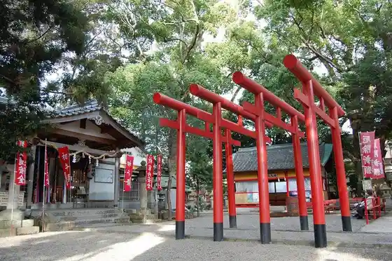

Arida Mikan Kaido
Arida, Wakayama · 0737-22-3624 · Official / source link
Shinsen Market Hama no Utase
Arida, Wakayama · 0737-23-7138 · Official / source link
Chi no Shima Beach
Arida, Wakayama · 0737-22-3624 · Official / source link
Miyazaki no Hana
Arida, Wakayama · 0737-22-3624 · Official / source link
Ito Ware Inari Shrine
Arida, Wakayama · 0737-88-7093 · Official / source link

Arida BLUE Campground
Arida, Wakayama · 080-3567-1416 · Official / source link
Arida Kenko Supotsu Park BIG SMILE PARK
Arida, Wakayama · 070-9306-3122 · Official / source link
YABITSU VILLAGE
Arida, Wakayama · 090-6871-9332 · Official / source link
E Nama Tera
Arida, Wakayama · 0737-88-7110 · Official / source link
Minokawa no Oga Hasu
Arida, Wakayama · 0737-22-3624 · Official / source link